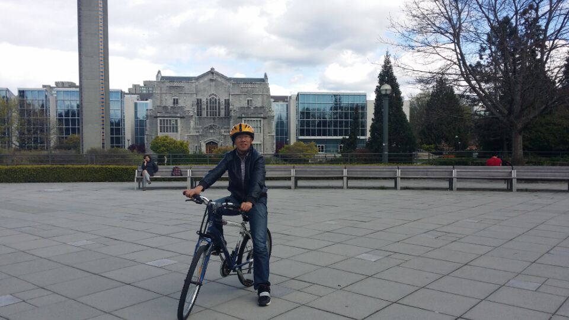

|
Address: School of Mathematics and Statistics,Hebei University of Economics and Business, Shijiazhuang, Hebei, 050061, P.R. China Email: gangwei (at) hueb.edu.cn |
 |
About
I received the M.S., and Ph.D. degrees in Applied Mathematics from, Liaocheng University, Liaocheng, Shandong, Beijing Institute of Technology，Beijing, China, in 2013 and 2017, respectively. In 2015, I was a Visiting Scholar with the University of British Columbia, Vancouver, BC Canada. I am currently working as an Associate Professor with the School of Mathematics and Statistics, Hebei University of Economics and Business, Shijiazhuang, Hebei, China.
Research interests
Nonlinear evolution equation
Nonlinear Waves
Symmetry and conservation laws
Solitons
Integrable Systems